PR Preview の準備状況
PRで変更した画面を、本番とは別のURLで試せるように準備しています。Googleログインの設定とデータの保存先は用意しました。画面の公開と、2人での操作確認はこれからです。
この報告を読むための用語辞典
まず「何を用意しているか」を読むための言葉です。ログインや公開の用語は、下のまとまりを開くと読めます。説明は、このPreviewでの使い方に合わせています。
まず押さえる言葉12項目
- Preview
- 本番と分けて、PRで変更した画面を試す場所です。今回の画面はまだ公開していません。
- Cloudflare / Cloudflare Network
- このアプリの処理を動かし、データを保存し、見てよい人を確認するサービスの提供元です。図のCloudflare Networkの枠は、Cloudflareのサービスをまとめた範囲を示します。
- ブラウザ / サーバー / HTTPS / ポート
- ブラウザは画面を開くアプリ、サーバーは依頼を受けて処理する側です。HTTPSは通信の内容を他人に読まれにくくする方式、ポートは接続先の受付番号です。
- コード / データの型
- コードはプログラムに行わせる仕事を書いたものです。データの型は文字・数値などのデータの種類と形です。
- 認証 / 認可
- 認証はログインした人が誰かを確かめること、認可はその人にどの操作を許すかを決めることです。
- GitHub Pages / HTML / SVG
- GitHub PagesはGitHubから文書のページを公開する機能です。HTMLはページの文章や構造を記した形式、SVGは線や文字などの形を記録する画像形式です。
- Workers / Worker
- Cloudflare上でプログラムを動かす仕組みです。Workerはそこで動くプログラム1つを指します。
- App / API
- Appは画面を表示する側です。APIは画面からの依頼を受け、ルームやデータを扱う側です。今回は別々のWorkerで動かします。
- D1 / DB / データベース
- データベースはデータを分類して保存し、後から取り出す場所です。DBはその略で、D1はCloudflareのデータベースです。今回は利用者やルームの入口情報を保存します。
- Durable Objects / RoomDO
- ルームごとの処理と保存場所を持つ仕組みです。RoomDOはこのアプリで使う処理の名前で、進行や共有付箋を管理します。
- Service Binding / binding
- Workerから、別のWorkerや保存先を使うための接続設定です。今回はAppからAPIを呼ぶ接続にも使います。
- WebSocket / WS
- 画面とサーバーの接続を保ち、変更をすぐ送り合う通信です。共同編集の付箋や進行を更新するために使います。
ログインと、見てよい人を決める言葉16項目
- ログイン / アカウント / ログアウト
- アカウントは、サービスで使う本人の登録情報です。ログインはその本人として利用を始めること、ログアウトはログイン状態を解除する操作です。
- Zero Trust / Access
- Zero TrustはCloudflareが安全に使うための機能をまとめたものの名前です。今回は、その中のAccessで、指定したGoogleアカウントだけにPreviewの閲覧を許可します。
- IdP / OAuth / OIDC
- IdPはログインした人を確認する提供元で、今回はGoogleです。OAuthはサービス間で利用を許可する仕組み、OIDCはその仕組みを使って本人情報を伝える方式です。
- Policy Tester
- Accessの許可判定を管理画面で試す道具です。今回は起動しましたが、結果の表示は確認できていません。
- Client ID / Client Secret
- GoogleとCloudflareをつなぐときの、アプリの識別番号と秘密の鍵です。Secretの値は図・PR・この報告には載せません。
- JWT / token / 署名
- 署名は、発行元だけが作れる確認用の情報です。JWTは本人情報や有効期限などに署名を付けたデータで、途中で書き換えられていないかを調べられます。tokenは認証などに使うデータの呼び名です。
- issuer / audience / AUD
- issuerはJWTを発行したサービス、audienceは受け取り先のアプリです。AUDはそのアプリの識別値です。別の発行元や別アプリ向けのJWTを受け入れないために照合します。
- Cookie / session / HttpOnly / Secure
- Cookieはブラウザが保存して送るデータ、sessionはログインを保つための状態です。HttpOnlyは画面内のプログラムからCookieを読めなくする指定、SecureはHTTPS通信でだけ送る指定です。
- policy / Allow / Include / Require / On・Off
- policyは「誰を許可するか」の条件です。Allowは許可、Includeは対象に含める条件、Requireは必須の条件です。On・Offは有効・無効を表します。今回は指定した2人のメールアドレスと、Googleでのログインを条件にしています。
- Service Auth / Service Token
- 人がログインする代わりに、決めたプログラム用の認証情報を確認する設定です。今回は自動検査が公開後のhealth確認に使います。
- API token / probe token
- API tokenはCloudflareの作成・更新などの管理操作に使う認証情報です。probe tokenは、このアプリでhealth経路だけに使う別の鍵です。用途の違う鍵を分けています。
- Secret / variable / flag
- Secretは秘密として保存する設定値、variableはそれ以外の設定値です。flagは機能の有効・無効を切り替える設定です。自動公開のflagはまだ有効にしていません。
- hostname / Origin / host限定
- hostnameはURLのサーバー名の部分です。Originは通信方式・サーバー名・ポートの組み合わせです。Cookieのhost限定は、別のPRのサーバーへログイン情報を送らないための指定です。
- namespace / resource
- namespaceは処理や保存先を分ける区分、resourceはWorkerやデータベースなどの用意する対象です。本番とPreviewで別の区分・対象を使います。
- host / owner / member / private
- ルームのhostは進行する人、ownerは作成者、memberは参加者を表します。privateは本人だけに見える未共有付箋のことです。URLのhostとは別の意味で使います。
- SSO / WARP / App Launcher
- SSOは1回のログインを複数のサービスで使う仕組みです。WARPはCloudflareの端末用接続アプリ、App Launcherは利用可能なアプリの一覧です。今回はWARPログインとLauncher表示を使いません。
自動検査と公開の言葉14項目
- Issue / Draft PR
- Issueは相談や作業を記録するGitHubのページです。Draft PRはまだ確認や準備が残る、下書き状態のPRです。
- CI / GitHub Actions / workflow / runner
- CIは変更のたびにテストなどを自動実行することです。GitHub Actionsはその実行サービス、workflowは作業手順、runnerは作業を実行する環境です。
- build / bundle / artifact / cache
- buildは公開用にプログラムをまとめる作業、bundleはまとめたプログラムです。artifactは実行後に保存した成果物、cacheは次の実行で再利用する保存データです。
- commit / SHA / run / attempt
- commitはコードを保存した版、SHAはその版の識別値です。runは自動処理の1回の実行、attemptは同じrunで何回目の実行かを表します。
- ブランチ / develop / merge / release
- ブランチはコードを別々に更新できる作業先です。developは開発変更を集めるブランチ、mergeはPRの変更を取り込むことです。releaseは本番へ公開する段階を指します。このリポジトリには同名の本番公開用ブランチもあります。
- deploy / デプロイ
- 用意したプログラムをCloudflareなどへ反映することです。この報告では、本番への反映とPreviewへの反映を分けて扱います。
- health / probe / 疎通確認
- healthは保存先を含めてアプリが応答できるかを確認する経路です。probeはその経路へ確認の通信を送ること、疎通確認は通信が届き、期待した応答が返るかを調べることです。
- migration / SQL
- migrationはデータの保存形式を作成・変更する手順、SQLはデータベースを操作する言葉です。今回は既存のmigration 9件をPreview用D1へ適用しました。
- unit / Workerテスト / Vitest
- unitは小さな処理単位を調べるテストです。WorkerテストはCloudflareに近い実行環境でWorkerを調べます。Vitestは今回使うテスト実行ツールです。
- typecheck / lint / dry-run
- typecheckはデータの型が合っているか、lintはコードのルール違反がないかを調べます。dry-runは実環境へ反映せず、公開用の準備処理を試すことです。
- Storybook / Chromatic / UI Tests
- Storybookは画面の部品を単独で試す場所、Chromaticはその画面の公開や比較を行うサービスです。UI Testsは画面を比較する検査の表示名です。
- リポジトリ / fork / close / reopen
- リポジトリはコードの保存場所で、forkは別の保存場所へコードを複製することです。closeはPRを閉じること、reopenは開き直すことです。今回の自動公開は同じリポジトリ内のPRを対象にします。
- 通常URL / 固定版URL / 部分wildcard
- 通常URLはPRの最新成功版、固定版URLは1回の公開版を開くURLです。部分wildcardは名前の一部を「どの文字列でもよい」とする指定で、複数のPreview URLをまとめて保護します。
- Next.js / OpenNext / Wrangler / draw.io
- Next.jsは画面を作る仕組み、OpenNextはそのアプリをCloudflare向けにまとめるための道具、WranglerはCloudflareの設定や公開を行う道具です。draw.ioは構成図を編集する道具です。
設定は用意できました。画面の公開はこれからです
Googleとの接続テストは成功。指定2名のAccess許可と、Preview専用D1の準備を完了しました。
API・App・RoomDOはまだ公開していません。公開後のログイン・共同編集は未確認です。
本番の設定や公開は変更していません。この文書サイトの公開と、アプリの公開も別の作業です。
PRごとに画面を分け、Previewの保存先を共有する
PRごとに変わるのはAppです。API・D1・RoomDOはPreview全体で共有し、本番とは別にします。同じルームのURLを渡すと、もう1人も自分のGoogleアカウントで参加する構成です。
Previewは短い操作確認に使います。アプリのログイン状態は最大1時間続きます。入室時には、その期限が切れていないことを確認します。5時間の会議や翌日の再開は保証しません。
D1とAccessは設定済みです。図のApp・API・RoomDOへの接続は、公開後に確認します。狭い画面では図の中だけ横へ動かせます。


作業開始時の本番構成も見る
本番ではAppからAPIを呼び、D1とRoomDOでデータを扱います。今回のPreviewはこの保存先に接続しません。

Cloudflare Networkの枠は、Cloudflareのサービスをまとめた範囲を示します。図はページと一緒に保存してあり、外部サイトの読み込みなしで表示できます。図を編集するときはdraw.ioの編集元を修正し、公開用のSVGも書き出し直します。
CloudflareとGitHubで設定したこと
本番から分けるため、保存先・秘密の鍵・ログインの許可をPreview用に用意しました。設定手順の正本と日時付きの操作台帳に詳しい記録があります。
| 対象 | 何をしたか | 残ること |
|---|---|---|
| Google / Access | 設定済み Zero Trustへ登録し、Googleとの接続テストに成功しました。指定した2人のメールアドレスだけを許可し、Googleログインを必須にしました。 | 公開したPreview画面で、2人ともログインできることを確認します。 |
| D1 | 作成済み Preview用D1を新規作成し、既存のmigration 9件を適用しました。読取確認では利用者の登録は0件でした。 | API公開後に、実際の読み書きを確認します。 |
| App / API / RoomDO | コードを用意済み PRごとのApp、本番と別のAPI、Preview用RoomDOを使う設定を追加しました。 | PRをdevelopへ取り込み、CI成功後に公開します。 |
| Secret / Cookie | 設定済み Preview用のSecretを5つ、GitHubへ登録しました。AccessのCookieはHttpOnlyを有効にし、App Launcherの表示を外しました。 | 公開時にWorkerへSecretを反映します。アプリ側のCookie分離も公開後に確認します。 |
| CI / health | 認証設定済み health用Service Token1つだけを許可するService Authを追加しました。期限は1年です。Accessのissuer・AUDもGitHubへ登録しました。 | CI用Cloudflare API tokenの実権限と、公開後のhealth応答を確認します。 |
| 自動公開のflag | 未有効化PREVIEW_ENABLEDは未設定です。準備途中の画面を自動で公開する状態にはしていません。 | Worker公開と動作確認の準備が整ってから有効にします。 |
Secretの値、実際のメールアドレス、アカウントやtokenの識別値、契約の詳細は、この報告に載せていません。Secret入りの一時ファイルは登録後に削除しました。本番・他のWorkers・アカウント全体のAccess設定は変更していません。
担当者向け：設定画面の表示と設定名の引用
利用者用policyは
Preview reviewers Googleです。指定2名のEmailsをIncludeし、Login MethodはGoogleをRequireしています。AppはGoogleのみ、instant auth On、WARP auth Off、session 24hです。保存後の再読込でも確認しました。CI用policyは
Preview CI healthです。Service Authでidea-boost-preview-ci-healthだけをIncludeします。アプリのprobe tokenは/api/healthに限定し、通常画面・API・WSには使えない実装です。対象hostnameは
*-idea-boost-preview-app.<account-subdomain>.workers.devの1件です。通常URLと固定版URLを保護する設定です。Worker単位のAccessはWebSocketに対応しないため使っていません。GitHubに登録した名前は
PREVIEW_D1_ID、PREVIEW_ACCESS_ISSUER、PREVIEW_ACCESS_AUD、PREVIEW_SESSION_SECRET、PREVIEW_ALLOWED_EMAILS、PREVIEW_PROBE_TOKEN、PREVIEW_ACCESS_CLIENT_ID、PREVIEW_ACCESS_CLIENT_SECRETです。値は記載しません。Appは
workers_dev: false・preview_urls: true、APIは両方falseの設定です。Appの画面素材もWorkerを通り、APIはAppからのService Bindingで呼びます。実際の公開と別入口の保護はまだ検証していません。
確認できたことと、公開後に確認すること
確認済み
- Google IdPの接続テストで本人情報を取得し、成功表示を確認しました。
- Googleでログインした指定の2人を許可する設定と、CI用の認証設定を、保存後に読み直しました。CookieのHttpOnly設定も確認しました。
- 自動テストで、不正なJWT、許可外のメール、本番Cookieの流用、別OriginのWebSocket接続を拒否することを確認しました。
- 14ステップのルーム準備を確認しました。共同編集のテストでは、作成者の未共有付箋12枚は本人だけに届き、参加者には0枚でした。参加者が作った1枚は再入室後も残りました。
- Storybookで14ステップの選択と、失敗後の再試行を確認しました。パソコンとスマートフォンの幅でページ全体の横はみ出しはありませんでした。
公開後に確認すること
- 通常URL・固定版URLから本人としてログインし、保存先を含めたhealthとWebSocketを確認します。
- 2人がそれぞれのGoogleアカウントで、招待・付箋の追加と共有・投票・進行を操作します。
- 2件のPRを並行して使い、PRの終了・開き直しで対象のAppだけが終了・再作成されることを確認します。
- ログアウトでAccessのログインも終了し、ほかのURLから保護を迂回できないことを確認します。
Google IdPの接続成功は、Previewアプリでのログイン成功とは別です。Policy Testerは起動しましたが、判定結果の表示を確認できていないため成功には数えていません。
担当者向け：検証記録と確認資料
実装版のCIは全5ジョブ成功しました。unit 2,703件、Worker 913件、Preview 24件、ローカル検証Worker 32件が成功。ブラウザは455件成功・15件skipでした。型・lint・build・Service Bindingの確認も成功しています。
別に行ったローカル検証では、unit 2,710件全体と追加5件の個別実行が成功しました。CIとは実行対象が異なるため、件数を分けて記録しています。今回の差分を入れた作業場所で型・lint・Preview buildを確認し、検査設定は緩めていません。
App Worker bundleのdry-runは8.7MB・gzip 1.8MBで成功しました。Wranglerは4.149.0、OpenNextは1.20.1を使います。
Storybook公開は成功しました。ChromaticのUI Testsはプラン更新の案内で保留になっており、画面差分の検査は未実施です。画面・構成図・確認結果の資料で確認できます。
Google側は外部の利用者向けで、テスト中の設定です。今回の要求は本人確認・メール・プロフィールの基本情報だけで、Google公式仕様の例外に当たります。テストユーザー登録や一般公開への切り替えは行っていません。
この報告の公開と、アプリの本番releaseは別です
Previewを使うために、本番releaseへ載せる必要はありません。PRをdevelopへ取り込んだ後、Preview専用の経路でAPIとAppを公開します。本番にも変更を反映するときは、別途通常のreleaseを行います。
このHTMLはGitHub Pages用の文書です。文書サイト用HTMLの変更をdevelopへ取り込むと、文書サイトの公開が自動実行されます。文書が読めるようになっても、Previewアプリが公開済みになったとは限りません。
本番公開では、公開する候補を確認し、アプリの公開とhealth確認に成功してから履歴に記録します。リリース運用の正本に従います。